Magical workshop
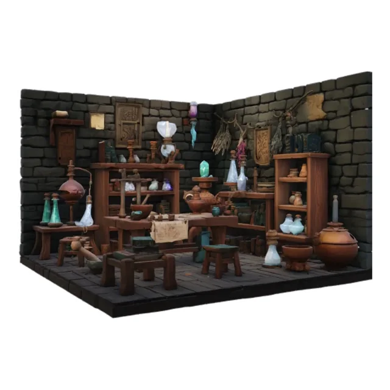
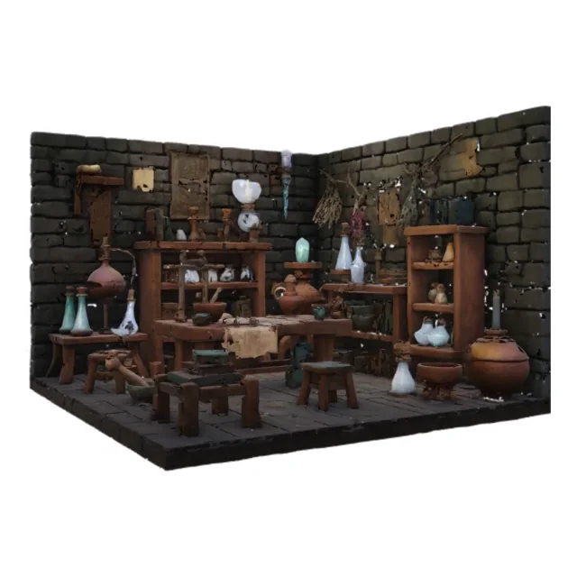
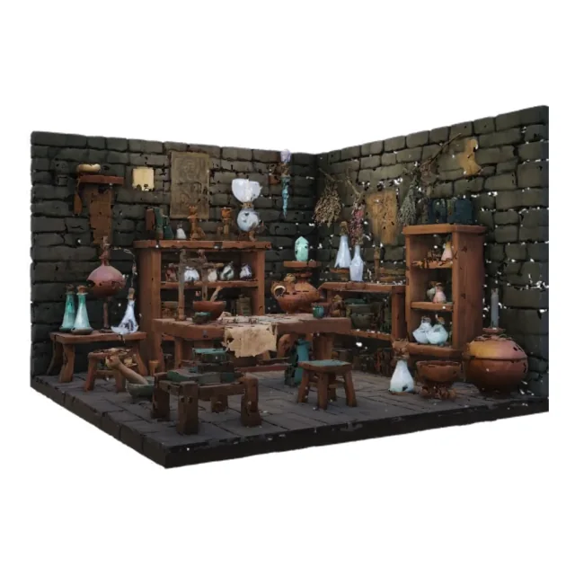
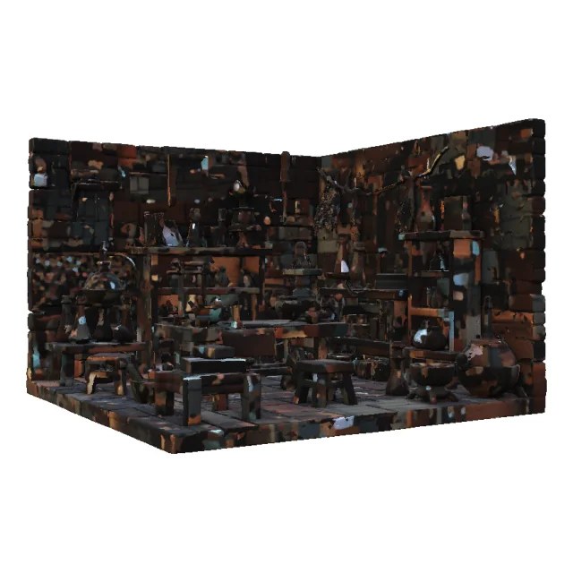
Training-free 3D generation acceleration
Reliable caching for structured latent 3D generation
Diffusion and rectified-flow models enable high-quality 3D synthesis, but their iterative inference remains computationally expensive. Transferring existing caching strategies to structured latent 3D generation poses reliability challenges: globally aggregated change estimates can obscure spatially concentrated latent evolution, while a straightforward token-output reuse adaptation mixes stale predictions with outputs recomputed under an altered attention context. We propose Cache3D, a training-free acceleration framework that separates the spatial granularity of cache-reliability estimation from the computational granularity of reuse. Cache3D groups sparse tokens into cells of the latent 3D grid, averages anchor-relative token drift within each cell, and uses the maximum cell response as a localized cache-risk proxy. This signal guides adaptive selection among denoising-step reuse, transformer-block fallback, and full denoiser refresh, without treating individual tokens or cells as independent cache units. On the TRELLIS 2.0 example-image benchmark, Cache3D achieves 1.633× end-to-end speedup and reduces shape latent relative RMSE by 16.0% compared with EasyCache, while maintaining comparable geometric fidelity.
Qualitative comparison
All results use the same input, seed, and camera pose. Cache3D remains closer to full inference than EasyCache and the token-wise ToCa adaptation.




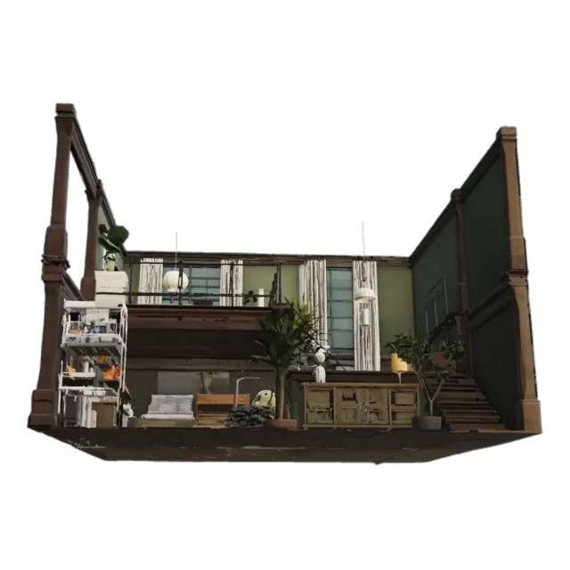
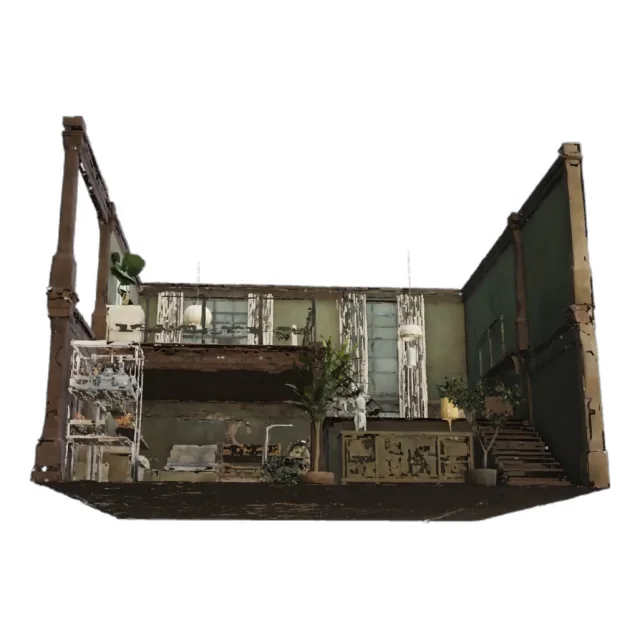
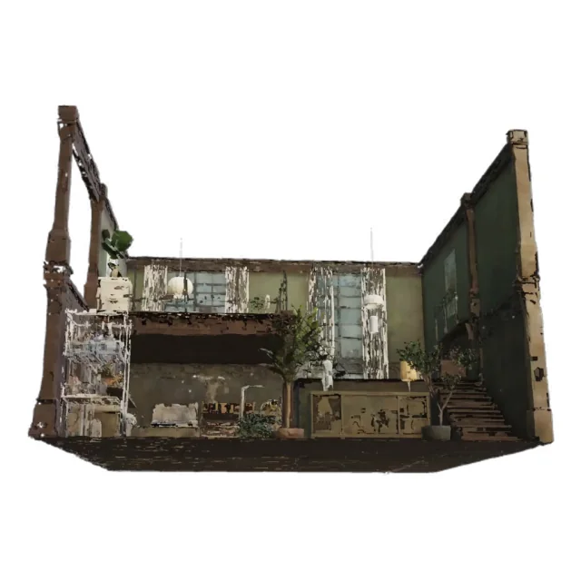
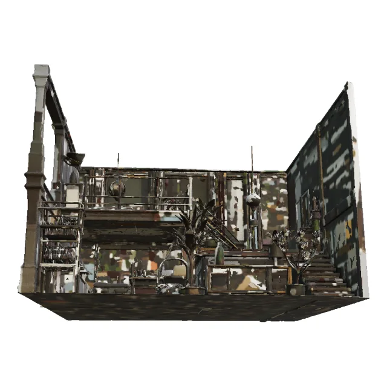
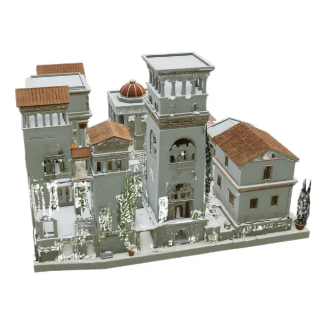
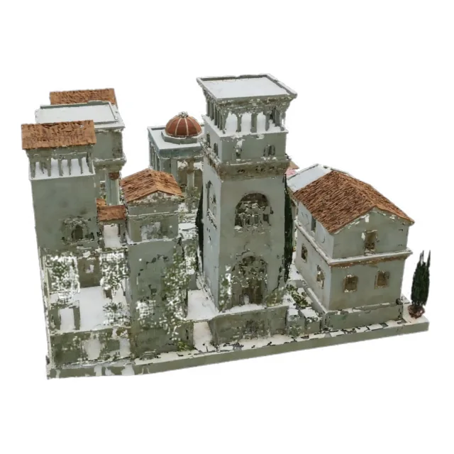
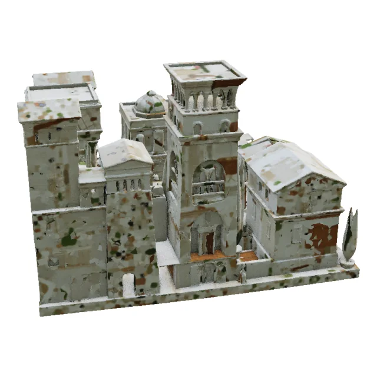
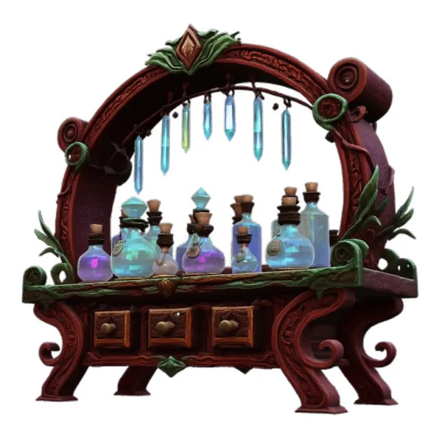
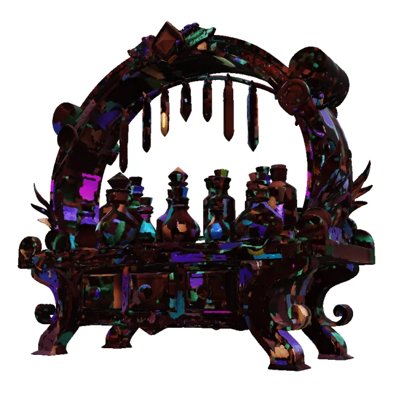